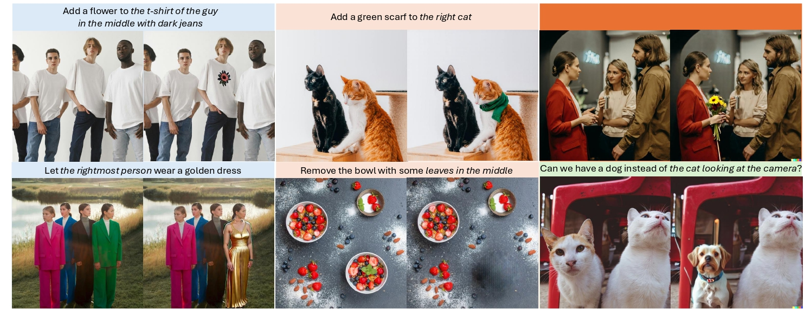

Shivam Singh
Computer Vision & Generative Models
I'm a Computer Science PhD student at Arizona State University working on generative computer vision. My research interests lie specifically in the areas of layered image / video decomposition and editing, unified modeling for generation and understanding, and long horizon world modeling.
Open to research collaborations — reach out by email{kind=link}
News
- August 2026 - Continuing as a part-time Applied Scientist Intern at Prime Video & Amazon MGM Studios
- May 2026 — Started as an Applied Scientist Intern at Prime Video & Amazon MGM Studios, working on layered image decomposition and editing.
- Oct 2025 — Presenting our work on RefEdit at ICCV 2025 in Hawaii!
- Sep 2025 — Our paper Chimera is out on arXiv!
- May 2025 — Our paper RefEdit is accepted to ICCV 2025!
- Aug 2024 — Joined Arizona State University as a PhD student!
Research

ICCV 2025
project page · arXiv · code · bibtex
RefEdit, an instruction-based editing model trained on 20,000 synthetic triplets, outperforms baselines trained on millions of samples in complex scene editing and achieves state-of-the-art results on referring-expression and traditional benchmarks.

Chimera is a personalized image-generation model trained on a semantic part-based dataset, enabling novel object synthesis by combining parts from multiple images via textual instructions — outperforming baselines by 14% in compositional accuracy and 21% in visual quality.
Projects
Funded by DoD — in collaboration with UofA
Jan–May 2026
Developed agents to function as virtual standardized insomnia patients for therapist training and clinical education. Finetuned LLMs for context-aware dialogue systems to simulate realistic patient–therapist interactions.
Experience
-
May 2026 – PresentApplied Scientist Intern · Prime Video & Amazon MGM Studios
Working on layered image decomposition and editing.
-
Aug 2024 – PresentGraduate Research Assistant · Arizona State University
Computer vision and generative models for controllable image/video generation.
-
2020 – 2024Undergraduate Research Assistant · Jadavpur University
Research on AI for medical imaging while completing a B.E. in Computer Science.
Teaching
- Operating Systems (Fall 2024 & Fall 2025) Supervised exam review sessions and lab projects on core operating systems concepts such as process management, synchronization, and memory allocation.
- Object-Oriented Programming & Data Structures (Spring 2025) Assisted students with object-oriented design, data structures, and algorithms; held office hours and gave lab feedback.